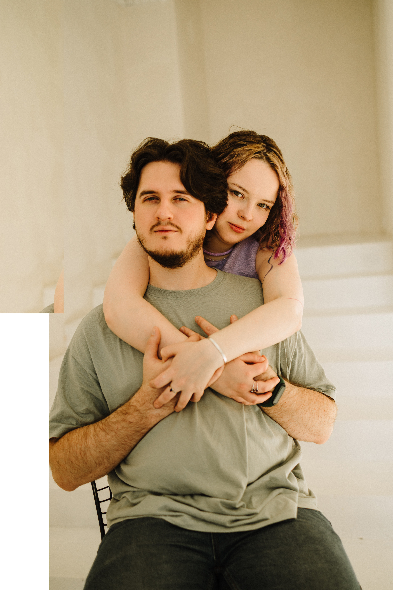

Мария
и Александр

С вами наша свадьба будет ещё счастливее! Приходите разделить этот день с нами.
Программа дня
- Сбор гостей
- Выездная церемония
- Банкет
Место проведения
Банкетный зал More Amore
зал GRANDE
ул. Энгельса, 107
По желанию, вы можете добавить в свой наряд элемент зеленого или фиолетового - это наши любимые цвета.
Зелёный
Фиолетовый


По вопросам о свадьбе и подготовке особенного поздравления пишите нашему организатору Тане: 8 906 892-05-30